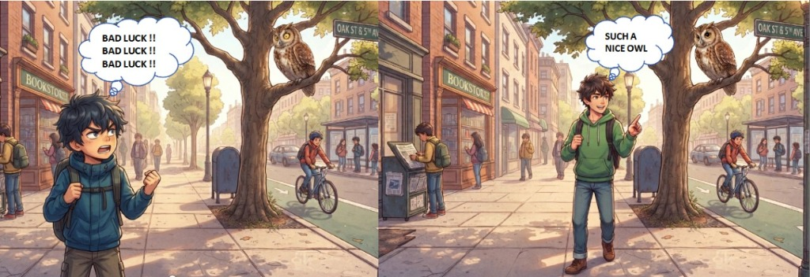

Style, Text, and
Frequency
Readerly recurrence, statistical norms, and literary foregrounding
“Stylistics is the study of style as a linguistic rather than literary study.”
Welcome to the 3D analytical investigation of literary style. How do quantitative linguistic patterns, statistical baselines, and authorial deviations combine to shape readerly perception and artistic foregrounding?
Pattern, Frequency, and Statistical Limits
The foundational principles governing the empirical examination of style
Style as Recurrence
Sustained linguistic tendency rather than isolated choices.
A writer's style cannot be judged by an isolated fluke or a solitary sentence. Style is the cumulative, persistent recurrence of specific linguistic structures that gradually builds a recognizable pattern in the reader's cognitive processing.
No Pure Objectivity
Statistics support intuition rather than replace judgment.
Mechanical counting cannot substitute literary sensitivity. Numerical tallies provide empirical verification, but only qualitative literary insight reveals what those frequency distributions signify artistically and thematically.
“Counting without literary insight is mere arithmetic; intuition without empirical data is mere impressionism.”
Deviance, Prominence, and Foregrounding
The three distinct stages through which linguistic features achieve aesthetic power
Deviance
An objective departure from standard grammar, lexical expectation, or probabilistic baseline distributions.
Linguistic FactProminence
The cognitive mechanism whereby a linguistic feature attracts active readerly attention and stands out in the textual fabric.
Reader PerceptionForegrounding
The motivated aesthetic design (Prague School / Mukařovský) that transforms noticeable deviance into literary meaning.
Literary FunctionRelative, Secondary, and Internal Norms
Deviance cannot exist without a benchmark; every stylistic deviation is evaluated against a specific norm
| Norm Type | Comparison Basis | Key Example |
|---|---|---|
| Relative Norm | Same author, genre, or style borrowing | Mimicking letters or speech |
| Secondary Norm | Consistent internal text pattern | Lok's speech in The Inheritors |
| Internal Deviation | Departure from text’s own norm | Complex climax in Hemingway |
Style measured against external baselines: an author comparing against their earlier works or borrowing letter-writing conventions.
Golding achieves a brand-new norm: Lok's restricted Neanderthal syntax and sensory perspective in The Inheritors.
Hemingway creates a simple declarative baseline, then intentionally ruptures it with sudden complex syntax at the climax.
Dynamic Style and Style Markers
The analytical toolkit used to map stylistic movement and identify functional linguistic units
Pervasive vs. Local
Global tendencies paired with local dramatic shifts.
Pervasive characteristics run throughout the whole text establishing authorial voice; local characteristics are confined to a scene or dialogue for sudden dramatic intensity.
Internal Variation
Style evolves or shifts tone across scenes.
Style is never static: authors modulate clause length, lexical choices, and perspectives dynamically as characters mature or narrative tension escalates.
Style Markers
Units and categories carrying clear literary function.
Specific linguistic features (e.g., transitive verbs, abstract nouns, manner adverbs, elegant variations) that carry demonstrable stylistic significance.
One Reality, Two Perspectives: How Framing Shapes Style
The identical linguistic fact generates opposite reader realities through cognitive foregrounding

“Frequency Reveals Pattern;
Literary Insight Reveals Meaning”
Chapter 2 Summary · Style in Fiction
Frequency Reveals Habits
Mathematical frequency tallies linguistic recurrence, establishing the normative baseline of expectation.
Deviance Prompts Salience
Linguistic departure from the norm creates psychological prominence in the reader's cognitive consciousness.
Foregrounding Achieves Art
Artistic motivation transforms quantifiable deviations into profound aesthetic and thematic meaning.
FORENSIC STYLISTIC EVALUATION
STYLE, TEXT, AND FREQUENCY
STYLE IN FICTION · CHAPTER 2
“Style is not only about what a writer says, but also about the linguistic choices and quantifiable patterns that distinguish the way it is said.”
Youssef Hassan